🕰️ História: Viagem ao Passado
Aqui você vai revisar os principais temas de História de forma leve e divertida. Vamos embarcar nessa viagem pelo tempo?
Módulo 1: O Descobrimento do Brasil
🎯 Objetivo: Compreender como aconteceu a chegada de Pedro Álvares Cabral ao Brasil, reconhecendo que o território já era habitado por diversos povos indígenas muito antes de 1500.
Bem-vindos à Nossa Viagem pela História do Brasil!
Hoje vamos embarcar juntos em uma aventura incrível pelo passado do nosso país. Vamos descobrir como era o Brasil antes da chegada dos portugueses, quem vivia aqui, como eram seus costumes e o que aconteceu quando Pedro Álvares Cabral e sua frota chegaram em 1500.
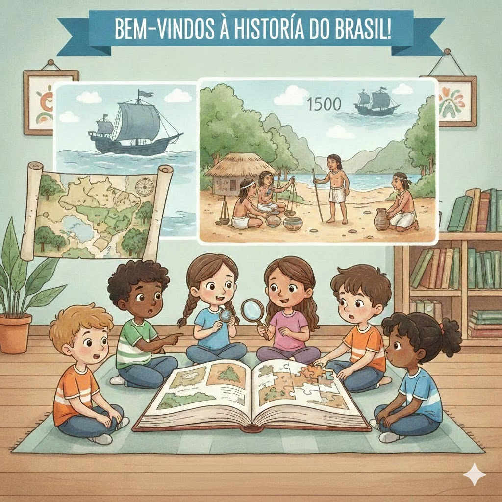A Chegada de Pedro Álvares Cabral
Em 1500, Pedro Álvares Cabral chegou ao Brasil. Mas o território já era habitado por diversos povos indígenas! Em 22 de abril de 1500, a frota portuguesa comandada por Pedro Álvares Cabral chegou às terras que hoje conhecemos como Brasil. Mas, na verdade, o território já era habitado há milhares de anos por diferentes povos indígenas, com culturas, línguas e tradições próprias. Cabral chamou o local de “Ilha de Vera Cruz”, achando que havia encontrado uma ilha, e mais tarde o nome foi mudado para Brasil, por causa do pau-brasil, árvore muito valiosa na época.
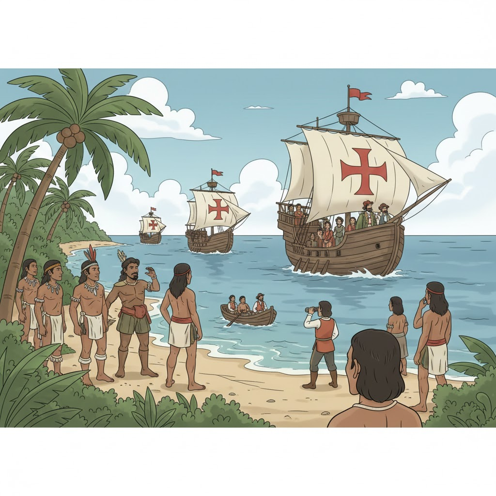Os Povos Indígenas Antes da Chegada dos Portugueses
Antes de 1500, milhares de povos indígenas viviam no território brasileiro. Eles tinham línguas, costumes e modos de vida próprios, baseados na caça, pesca, agricultura e trocas. Grupos como Tupinambás, Tupiniquins, Guaranis e Jês ocupavam diferentes regiões, em harmonia com a natureza.
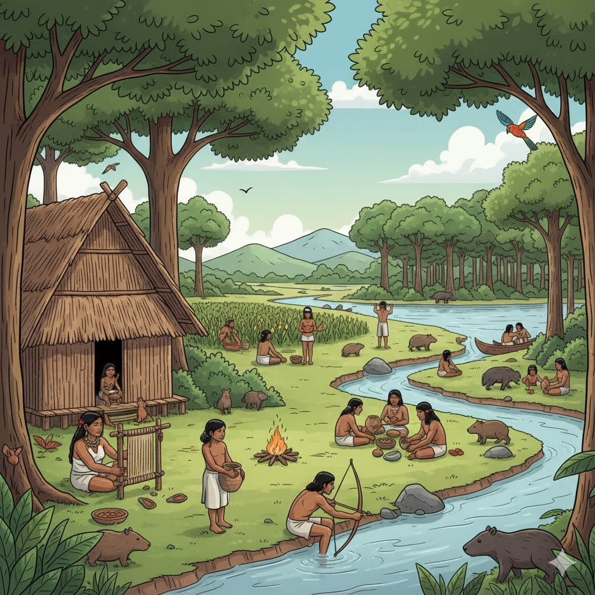Como Viviam os Povos Indígenas:
Os povos indígenas tinham uma relação muito especial com a natureza eles plantavam, pescavam, caçavam e usavam os recursos da floresta com respeito e equilíbrio. Cada grupo tinha suas próprias histórias, pinturas, músicas e jeitos de viver.
A Chegada da Frota de Pedro Álvares Cabral
A frota portuguesa partiu de Lisboa com 13 embarcações e mais de mil homens, com o objetivo de chegar às Índias. Mas os ventos desviaram o caminho, e em 22 de abril de 1500, eles avistaram o litoral do atual estado da Bahia. O local ficou conhecido como a “Terra de Vera Cruz”.
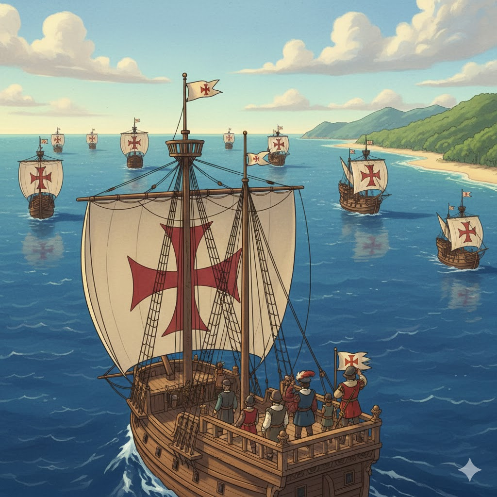Ilha de Vera Cruz:
Quando Cabral avistou o Monte Pascoal em 22 de abril de 1500, ele e sua tripulação batizaram a terra de Ilha de Vera Cruz, posteriormente, o nome foi mudado para Terra de Vera Cruz e, depois, Terra de Santa Cruz.
A Primeira Missa no Brasil
Poucos dias após o desembarque, em 26 de abril de 1500, foi celebrada a primeira missa em solo brasileiro, na praia da Coroa Vermelha (Bahia). O frei Henrique de Coimbra comandou a cerimônia, que simbolizou o início da presença portuguesa e católica no território.
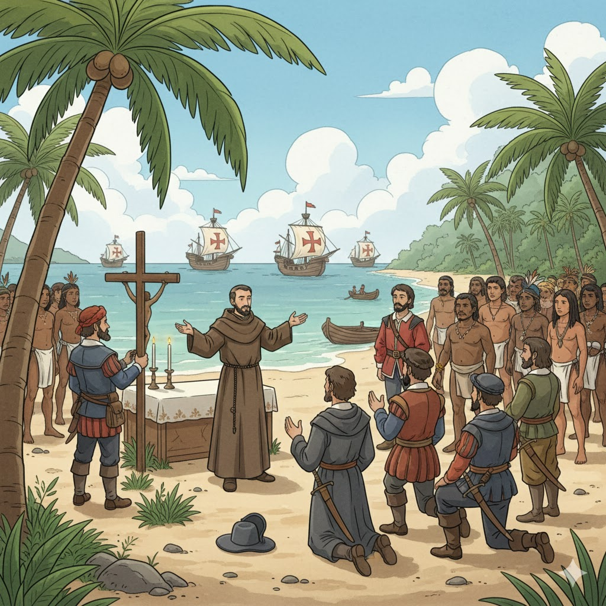Domingo de Ramos:
O dia 26 de abril de 1500, data da missa, era o Domingo de Ramos daquele ano, que marca o início da Semana Santa: Este período tem grande simbolismo para a fé católica. A missa foi um ato de posse religiosa e um evento que marcou o início da evangelização e da presença da Igreja Católica no novo território.
🎥 Assista: O Descobrimento do Brasil:
Próximo Módulo (1 de 4) →Módulo 2: A Era do Império
🎯 Objetivo: Compreender as principais características políticas, sociais e econômicas da Era do Império (1822–1889) e reconhecer seu papel na formação do Brasil moderno.
Seja Bem-Vindo(a) à História do Brasil Imperial! 👑
Hoje, vamos mergulhar em um dos períodos mais importantes da formação do nosso país: a Era do Império, que vai de 1822 a 1889.

O Brasil Monárquico e Suas Mudanças
A Era do Império foi o período da história do Brasil que vai de 1822 a 1889, começando com a Independência do Brasil e terminando com a Proclamação da República. Foi um tempo em que o país teve governo monárquico, ou seja, comandado por um imperador — Dom Pedro I e, depois, Dom Pedro II..
Principais acontecimentos
Durante o Império, o Brasil passou por grandes transformações:
- Consolidação da Independência e o Primeiro Reinado (1822–1831);
- O surgimento de movimentos sociais e políticos durante o Período Regencial (1831–1840);
- O Segundo Reinado, marcado pelo governo de Dom Pedro II (1840–1889);
- O fim da escravidão em 1888 durante o governo de Princesa Isabel;
- O crescimento da cultura, da vida urbana e dos debates políticos no país.
Dom Pedro II:
O imperador Dom Pedro II governou o Brasil por quase meio século, de 1840 a 1889. Esse longo período de governo é notável por trazer uma relativa estabilidade política ao país, especialmente após o conturbado Período Regencial, durante o seu reinado o Brasil viu o avanço da vida urbana, o florescimento cultural (como a literatura romântica) e o intenso debate sobre a questão da escravidão, que culminou na Lei Áurea em 1888..
Fim do Império
O Império terminou em 1889, quando o Marechal Deodoro da Fonseca proclamou a República. Dom Pedro II foi afastado do poder e viajou para a Europa. Apesar do fim da monarquia, o período imperial deixou importantes avanços políticos e culturais que ajudaram a formar o Brasil moderno.
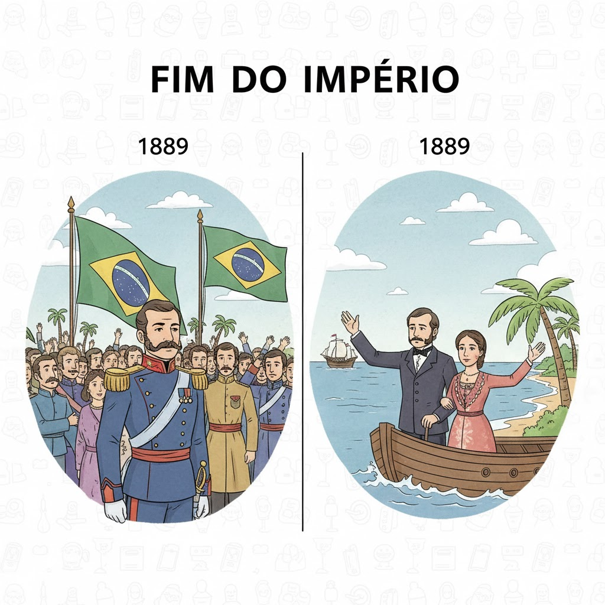Fato Curioso:
O Imperador Dom Pedro II foi deposto de surpresa por um golpe militar em 15 de novembro de 1889: Ele estava fora do Rio de Janeiro e não soube imediatamente que o Brasil havia se tornado uma República, sendo informado e obrigado a partir para a Europa horas depois.
Curiosidade: O Brasil já teve uma família real morando aqui por mais de 60 anos!
A História da Família Real no Brasil Em 1808, o Brasil recebeu uma visita inesperada, a Família Real Portuguesa, fugindo das tropas de Napoleão Bonaparte, que invadiram Portugal. A fuga aconteceu em plena guerra, e mais de 10 mil pessoas atravessaram o Atlântico em dezenas de navios. Quando Dom João VI chegou ao Rio de Janeiro, o Brasil ainda era colônia de Portugal. Mas com a vinda da corte, tudo mudou: O Rio virou capital do Império Português; Foram criadas escolas, bibliotecas, o Banco do Brasil e a Imprensa Régia; A cidade passou a ter novos costumes e infraestrutura. Em 1821, Dom João VI voltou para Portugal, deixando seu filho Dom Pedro I no comando. Um ano depois, em 1822, Dom Pedro proclamou a Independência do Brasil e se tornou o primeiro imperador brasileiro. A monarquia durou até 1889, quando a República foi proclamada. Nesse tempo, o Brasil teve dois imperadores: Dom Pedro I (1822–1831) Dom Pedro II (1840–1889) Assim, a Família Real viveu no Brasil por mais de 60 anos, deixando marcas profundas na nossa cultura, política e história.
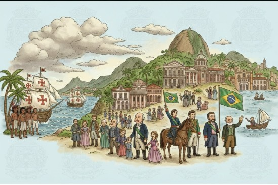Família Real
A fuga da Família Real de Portugal em 1808 foi tão apressada e caótica que muitos membros da corte, incluindo a Princesa Carlota Joaquina, chegaram ao Brasil infestados de piolhos devido à falta de higiene e às péssimas condições da viagem no navio.
🎥 Vídeo: A Era do Imperio:
Próximo Módulo (2 de 4) →Módulo 3: A República e os Dias Atuais
🎯 Objetivo: Entender o início da República no Brasil e como ela transformou o modo de governo do país, substituindo a monarquia por presidentes eleitos.
Olá, exploradores da história!
Deixamos para trás as coroas e os imperadores. Hoje, nossa viagem nos leva a um marco emocionante: o início da República no Brasil!
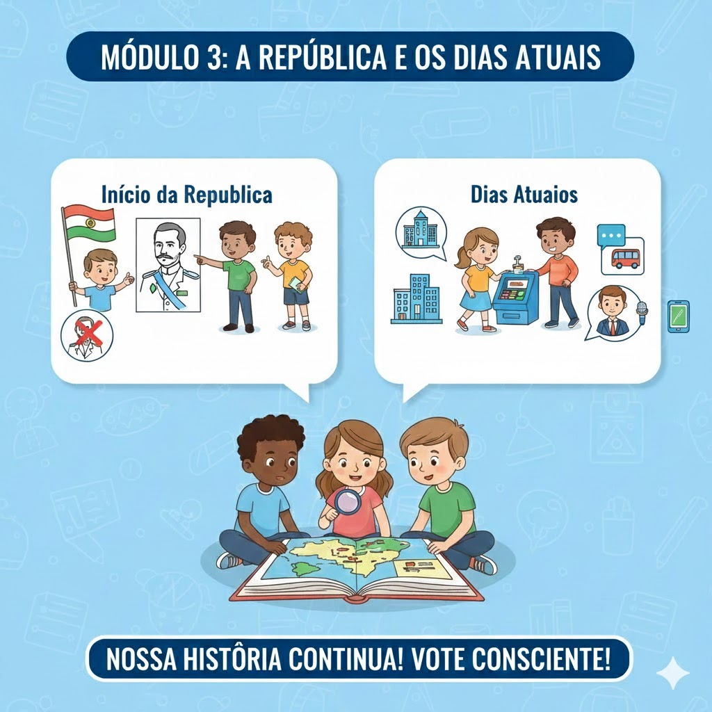Início da República (1889 – Primeira República)
Com a Proclamação da República, em 1889, o país passou a ser governado por presidentes. Desde então, muita coisa mudou! A República foi proclamada em 15 de novembro de 1889 pelo Marechal Deodoro da Fonseca, encerrando o período imperial. O novo regime trouxe o fim da monarquia e da figura do imperador, substituindo-a por um governo chefiado por presidentes eleitos (ao menos em teoria). Os primeiros anos foram marcados por instabilidade política, disputas entre militares e civis e o predomínio das oligarquias rurais (principalmente São Paulo e Minas Gerais, a chamada Política do Café com Leite). Apesar das limitações democráticas, foi um período de formação das instituições republicanas e de modernização gradual do país.
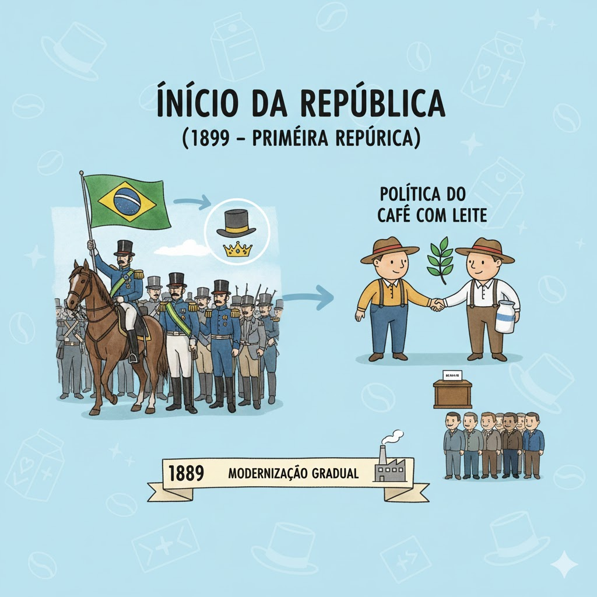República Moderna e as Transformações Sociais
Ao longo do século XX, o Brasil viveu diversos modelos de governo republicano, da ditadura de Vargas (Estado Novo) à redemocratização de 1945, passando pelo regime militar (1964–1985). Cada fase trouxe mudanças profundas:
- A industrialização e urbanização alteraram a economia e o modo de vida da população.
- O sufrágio universal se consolidou, garantindo o voto para todos os cidadãos adultos.
- A Constituição de 1988, após o fim da ditadura militar, estabeleceu as bases do Estado Democrático de Direito, assegurando liberdade, direitos civis e sociais.
Transformação Social:
Uma das maiores e mais rápidas transformações sociais do Brasil moderno foi a migração massiva do campo para a cidade: Em poucas décadas (entre 1940 e 1970), o país deixou de ser majoritariamente rural para se tornar predominantemente urbano devido à industrialização e ao êxodo rural.
A República nos Dias Atuais
Hoje, o Brasil continua sendo uma República Federativa Presidencialista, com três poderes independentes (Executivo, Legislativo e Judiciário). O país enfrenta desafios como desigualdade social, corrupção e polarização política, mas também avança em direitos sociais, inclusão e participação cidadã. A sociedade brasileira, mais conectada e informada, tem papel cada vez mais ativo na cobrança por transparência, ética e representatividade. Assim, a República, iniciada há mais de um século, segue em constante transformação, refletindo o desenvolvimento e as contradições do Brasil moderno.
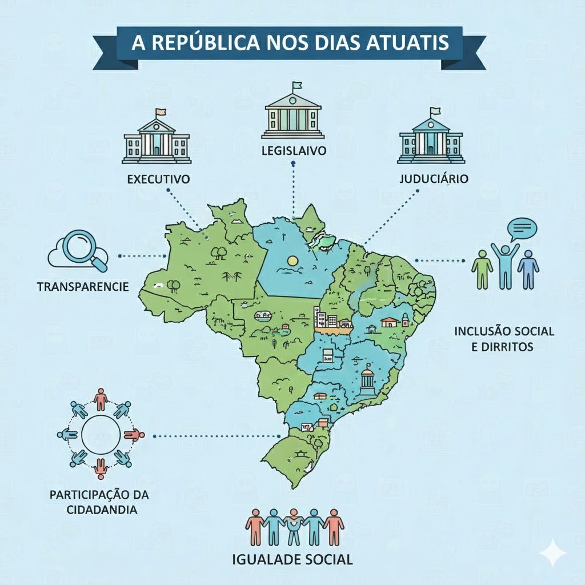Voto Feminino:
Embora a República tenha sido proclamada em 1889, as mulheres brasileiras só conquistaram o direito de votar em 1932, durante o governo de Getúlio Vargas, após mais de 40 anos de exclusão e intensa luta por parte de ativistas.
Curiosidade: A bandeira do Brasil foi inspirada na antiga bandeira imperial.
A bandeira do Brasil realmente foi inspirada na antiga bandeira do Império, criada em 1822, quando Dom Pedro I proclamou a Independência. A bandeira imperial tinha fundo verde, representando a Casa de Bragança (família de Dom Pedro I), e um losango amarelo, em referência à Casa de Habsburgo (família da imperatriz Leopoldina). No centro havia o brasão imperial, com a coroa, o Cruzeiro do Sul e ramos de café e tabaco, símbolos da riqueza do país na época. Quando o Brasil se tornou uma república, em 1889, decidiu-se manter as cores verde e amarela como homenagem à história e à unidade nacional. No entanto, o brasão imperial foi substituído por um círculo azul com estrelas representando os estados brasileiros e a inscrição “Ordem e Progresso”, inspirada nos ideais positivistas. Assim, a atual bandeira republicana manteve o formato e as cores do Império, mas com novos símbolos que representavam o novo regime e o futuro do país.
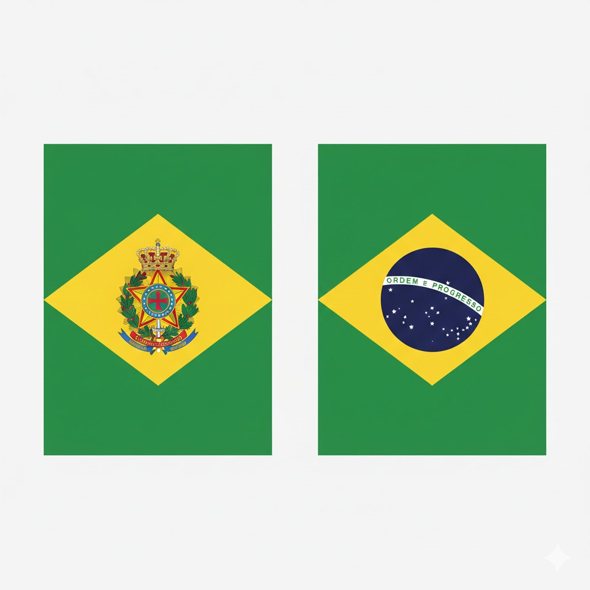Ordem e Progresso:
A famosa frase "Ordem e Progresso" na bandeira brasileira não é apenas um desejo, mas uma adaptação direta do lema da filosofia Positivista (criada por Auguste Comte), que valorizava a ciência e a razão como caminhos para o desenvolvimento da nação.
🎥 Vídeo: A Proclamação da Republica:
Próximo Módulo (3 de 4) →Módulo 4: Brasil Contemporâneo e Sociedade Atual
🎯 Objetivo: Compreender como o Brasil evoluiu após a Proclamação da República e identificar as principais características da sociedade brasileira atual.
Brasil Contemporâneo – Onde a História Encontra o Agora! 🌎
Parabéns por chegarmos ao último e mais relevante capítulo de nossa aventura histórica! Deixamos o Império e a Velha República para trás. Agora, vamos desembarcar no Brasil que nós vivemos, no Brasil de hoje!
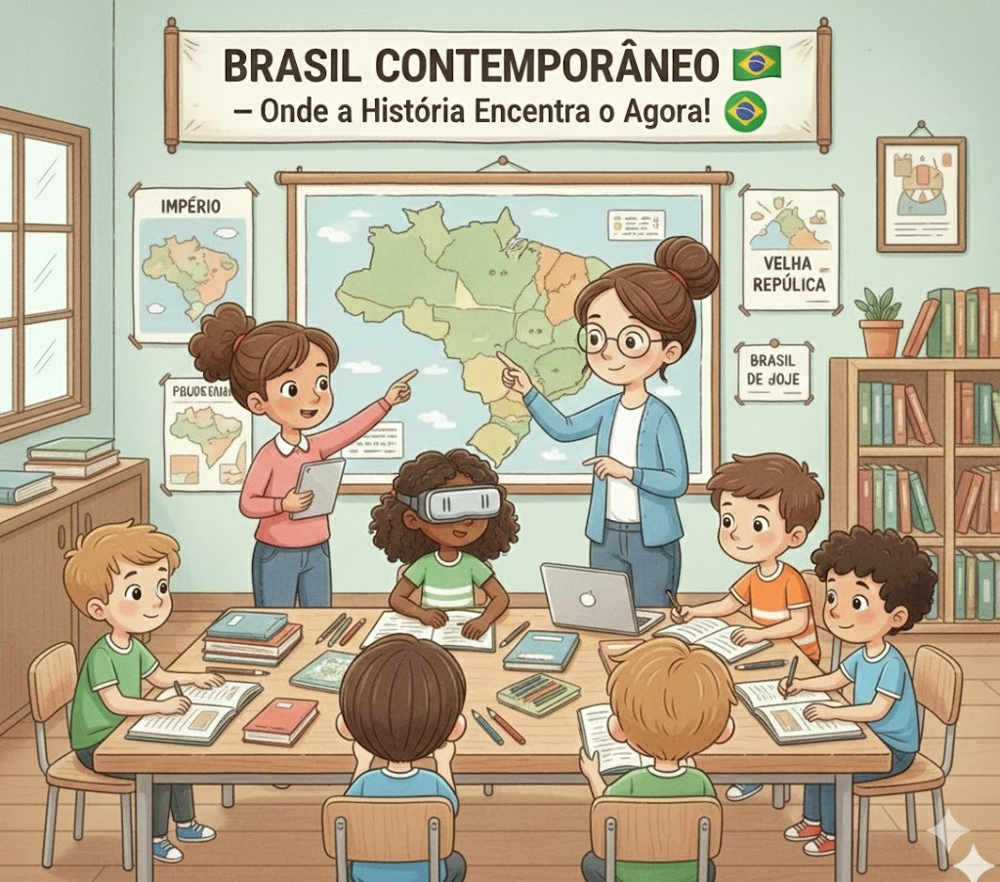Transformações Sociais e Tecnológicas no Brasil
Desde o final do século XX, o Brasil passou por diversas mudanças que transformaram o modo de viver da população. A chegada da tecnologia, como computadores, celulares e internet, aproximou pessoas e facilitou a comunicação. A vida urbana cresceu rapidamente, com mais pessoas vivendo nas cidades em busca de trabalho, estudo e oportunidades. Essas transformações também mudaram o comportamento das pessoas, que passaram a usar tecnologia na escola, no trabalho e até no lazer. Hoje, o Brasil é um dos países mais conectados do mundo.
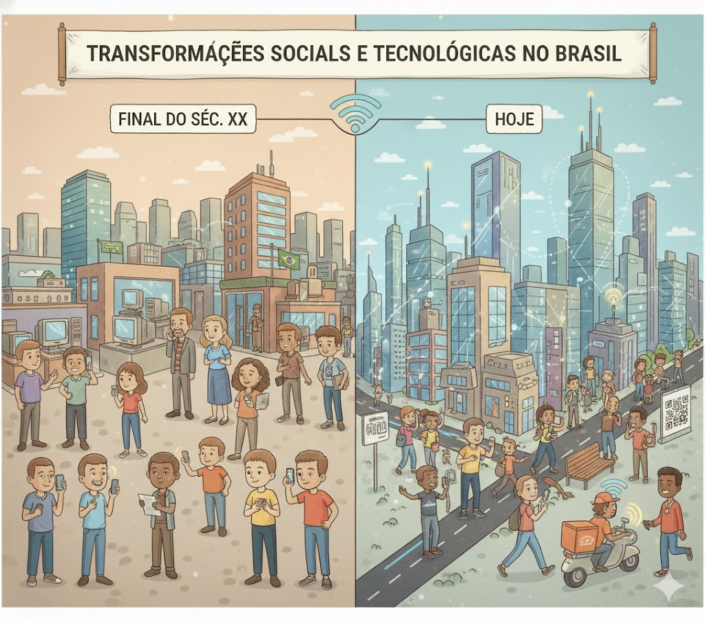Economia, Urbanização e Cultura na Atualidade
Nas últimas décadas, o Brasil se tornou um país com economia diversificada: agricultura, indústria, comércio e serviços. A urbanização acelerada fez surgir cidades maiores, com novos prédios, comércios e meios de transporte. Apesar de desafios como desigualdade social, muitas melhorias foram conquistadas, como maior acesso à educação, saúde e cultura. A cultura brasileira também se fortaleceu: música, festas, culinária, esportes e tradições regionais ganharam destaque dentro e fora do país. O Brasil é reconhecido pela sua diversidade cultural e criatividade.
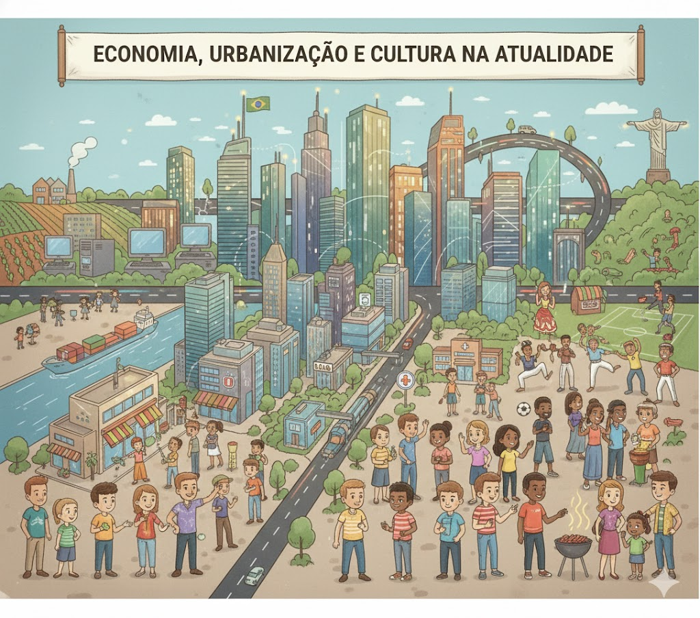Cultura e Economia:
A Economia Criativa (música, arte, design, moda) do Brasil gera um PIB maior do que setores tradicionais, como a indústria automobilística, isso mostra que a diversidade cultural e a criatividade brasileira são um motor econômico poderoso e em crescimento.
Desafios e Caminhos do Brasil Hoje
Mesmo com avanços importantes, o Brasil enfrenta desafios que ainda fazem parte do cotidiano da população:
- desigualdade social
- dificuldades na educação
- questões ambientais
- necessidade de maior segurança
- debates políticos intensos
Por outro lado, o país também avança:
- jovens mais participativos e conectados
- projetos de sustentabilidade
- expansão de tecnologias
- inclusão social e cultural
O Brasil contemporâneo é resultado de sua história, do descobrimento, do Império, da República — e continua em constante transformação.
Sustentabilidade vs. Desafio:
O Brasil tem uma das matrizes elétricas mais limpas do mundo, com mais de 80% da eletricidade vinda de fontes renováveis (hídrica, eólica, solar): Este é um grande avanço global em sustentabilidade que coexiste com os grandes desafios ambientais do país (como o desmatamento).
🎥 Vídeo: A Primeira República do Brasil (República Velha):
🎉 PARABÉNS! MÓDULO FINALIZADO! 🎉
Você completou a Aventura de História! Que conquista incrível!
Ver Mais Cursos e Aventuras →